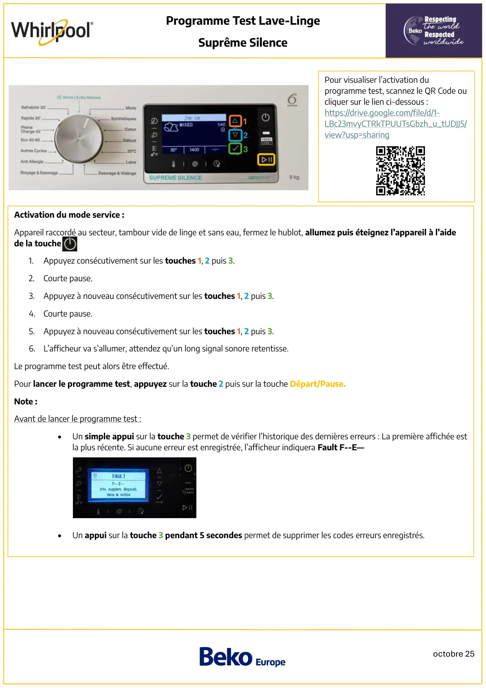
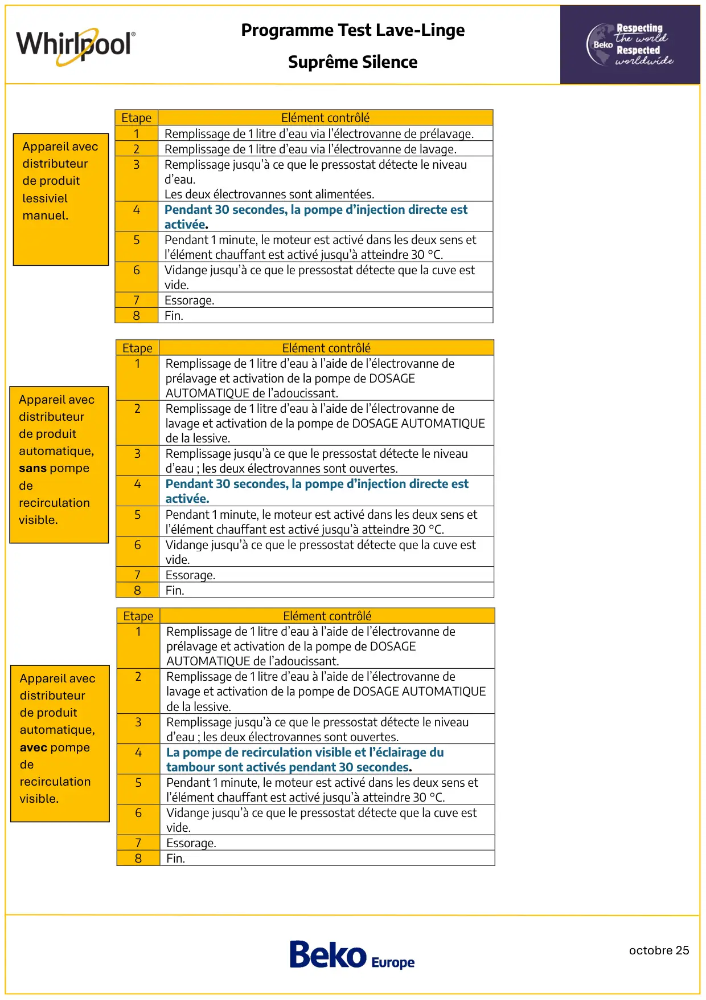
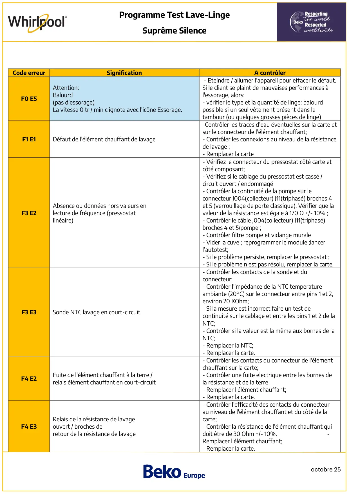
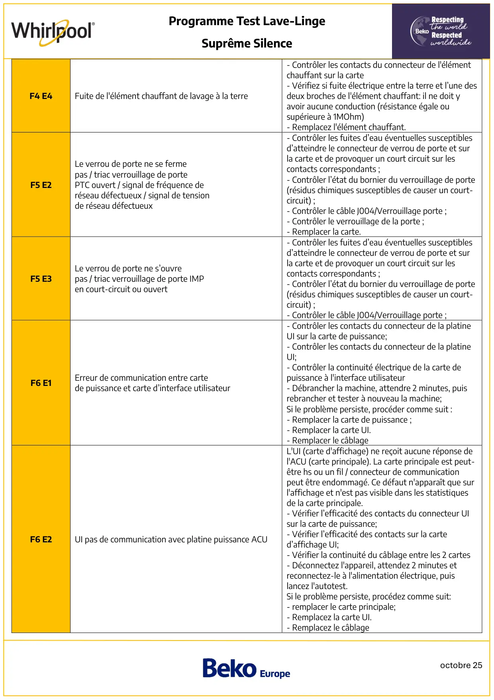
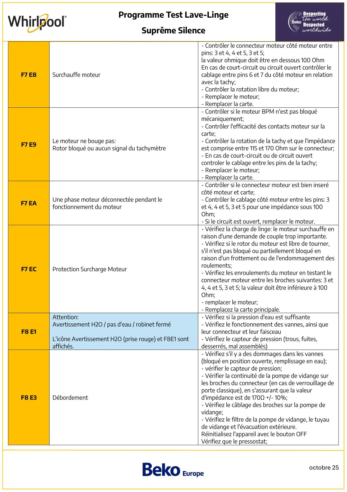
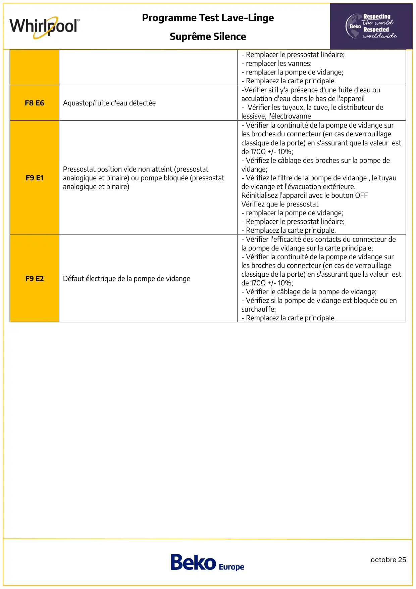

Prog Test lave linge Whirlpool SupremeSilence

octobre 25Programme Test Lave-LingeSuprême SilenceActivation du mode service :Appareil raccordé au secteur, tambour vide de linge et sans eau, fermez le hublot, allumez puis éteignez l’appareil à l’aidede la touche1.Appuyez consécutivement sur les touches 1, 2 puis 3.2.Courte pause.3. Appuyez à nouveau consécutivement sur les touches 1, 2 puis 3.4. Courte pause.5. Appuyez à nouveau consécutivement sur les touches 1, 2 puis 3.6. L’afficheur va s’allumer, attendez qu’un long signal sonore retentisse.Le programme test peut alors être effectué.Pour lancer le programme test, appuyez sur la touche 2 puis sur la touche Départ/Pause.Note :Avant de lancer le programme test :•Un simple appui sur la touche 3 permet de vérifier l’historique des dernières erreurs : La première affichée estla plus récente. Si aucune erreur est enregistrée, l’afficheur indiquera Fault F--E—•Un appui sur la touche 3 pendant 5 secondes permet de supprimer les codes erreurs enregistrés.132Pour visualiser l’activation duprogramme test, scannez le QR Code oucliquer sur le lien ci-dessous :https://drive.google.com/file/d/1-LBc23mvyCTRkTPUUTsGbzh_u_tUDJJ5/view?usp=sharing
1 / 6
octobre 25Programme Test Lave-LingeSuprême SilenceEtapeElément contrôlé1Remplissage de 1 litre d’eau via l’électrovanne de prélavage.2Remplissage de 1 litre d’eau via l’électrovanne de lavage.3Remplissage jusqu’à ce que le pressostat détecte le niveaud’eau.Les deux électrovannes sont alimentées.4Pendant 30 secondes, la pompe d’injection directe estactivée.5Pendant 1 minute, le moteur est activé dans les deux sens etl’élément chauffant est activé jusqu’à atteindre 30 °C.6Vidange jusqu’à ce que le pressostat détecte que la cuve estvide.7Essorage.8Fin.EtapeElément contrôlé1Remplissage de 1 litre d’eau à l’aide de l’électrovanne deprélavage et activation de la pompe de DOSAGEAUTOMATIQUE de l’adoucissant.2Remplissage de 1 litre d’eau à l’aide de l’électrovanne delavage et activation de la pompe de DOSAGE AUTOMATIQUEde la lessive.3Remplissage jusqu’à ce que le pressostat détecte le niveaud’eau ; les deux électrovannes sont ouvertes.4Pendant 30 secondes, la pompe d’injection directe estactivée.5Pendant 1 minute, le moteur est activé dans les deux sens etl’élément chauffant est activé jusqu’à atteindre 30 °C.6Vidange jusqu’à ce que le pressostat détecte que la cuve estvide.7Essorage.8Fin.EtapeElément contrôlé1Remplissage de 1 litre d’eau à l’aide de l’électrovanne deprélavage et activation de la pompe de DOSAGEAUTOMATIQUE de l’adoucissant.2Remplissage de 1 litre d’eau à l’aide de l’électrovanne delavage et activation de la pompe de DOSAGE AUTOMATIQUEde la lessive.3Remplissage jusqu’à ce que le pressostat détecte le niveaud’eau ; les deux électrovannes sont ouvertes.4La pompe de recirculation visible et l’éclairage dutambour sont activés pendant 30 secondes.5Pendant 1 minute, le moteur est activé dans les deux sens etl’élément chauffant est activé jusqu’à atteindre 30 °C.6Vidange jusqu’à ce que le pressostat détecte que la cuve estvide.7Essorage.8Fin.Appareil avecdistributeurde produitlessivielmanuel.Appareil avecdistributeurde produitautomatique,sans pompederecirculationvisible.Appareil avecdistributeurde produitautomatique,avec pompederecirculationvisible.
2 / 6
octobre 25Programme Test Lave-LingeSuprême SilenceCode erreurSignificationA contrôlerF0 E5Attention:Balourd(pas d'essorage)La vitesse 0 tr / min clignote avec l'icône Essorage.- Eteindre / allumer l'appareil pour effacer le défaut.Si le client se plaint de mauvaises performances àl'essorage, alors:- vérifier le type et la quantité de linge: balourdpossible si un seul vêtement présent dans letambour (ou quelques grosses pièces de linge)F1 E1Défaut de l'élément chauffant de lavage-Contrôler les traces d’eau éventuelles sur la carte etsur le connecteur de l'élément chauffant;- Contrôler les connexions au niveau de la résistancede lavage ;- Remplacer la carteF3 E2Absence ou données hors valeurs enlecture de fréquence (pressostatlinéaire)- Vérifiez le connecteur du pressostat côté carte etcôté composant;- Vérifiez si le câblage du pressostat est cassé /circuit ouvert / endommagé- Contrôler la continuité de la pompe sur leconnecteur J004(collecteur) J11(triphasé) broches 4et 5 (verrouillage de porte classique). Vérifier que lavaleur de la résistance est égale à 170 Ω +/- 10% ;- Contrôler le câble J004(collecteur) J11(triphasé)broches 4 et 5/pompe ;- Contrôler filtre pompe et vidange murale- Vider la cuve ; reprogrammer le module ;lancerl’autotest;- Si le problème persiste, remplacer le pressostat ;- Si le problème n’est pas résolu, remplacer la carte.F3 E3Sonde NTC lavage en court-circuit- Contrôler les contacts de la sonde et duconnecteur;- Contrôler l'impédance de la NTC temperatureambiante (20°C) sur le connecteur entre pins 1 et 2,environ 20 KOhm;- Si la mesure est incorrect faire un test decontinuité sur le cablage et entre les pins 1 et 2 de laNTC;- Contrôler si la valeur est la même aux bornes de laNTC;- Remplacer la NTC;- Remplacer la carte.F4 E2Fuite de l'élément chauffant à la terre /relais élément chauffant en court-circuit- Contrôler les contacts du connecteur de l'élémentchauffant sur la carte;- Contrôler une fuite electrique entre les bornes dela résistance et de la terre- Remplacer l'élément chauffant;- Remplacer la carte.F4 E3Relais de la résistance de lavageouvert / broches deretour de la résistance de lavage- Contrôler l’efficacité des contacts du connecteurau niveau de l'élément chauffant et du côté de lacarte;- Contrôler la résistance de l'élément chauffant quidoit être de 30 Ohm +/- 10%. -Remplacer l'élément chauffant;- Remplacer la carte.
3 / 6
octobre 25Programme Test Lave-LingeSuprême SilenceF4 E4Fuite de l'élément chauffant de lavage à la terre- Contrôler les contacts du connecteur de l'élémentchauffant sur la carte- Vérifiez si fuite électrique entre la terre et l’une desdeux broches de l'élément chauffant: il ne doit yavoir aucune conduction (résistance égale ousupérieure à 1MOhm)- Remplacez l'élément chauffant.F5 E2Le verrou de porte ne se fermepas / triac verrouillage de portePTC ouvert / signal de fréquence deréseau défectueux / signal de tensionde réseau défectueux- Contrôler les fuites d’eau éventuelles susceptiblesd’atteindre le connecteur de verrou de porte et surla carte et de provoquer un court circuit sur lescontacts correspondants ;- Contrôler l’état du bornier du verrouillage de porte(résidus chimiques susceptibles de causer un court-circuit) ;- Contrôler le câble J004/Verrouillage porte ;- Contrôler le verrouillage de la porte ;- Remplacer la carte.F5 E3Le verrou de porte ne s’ouvrepas / triac verrouillage de porte IMPen court-circuit ou ouvert- Contrôler les fuites d’eau éventuelles susceptiblesd’atteindre le connecteur de verrou de porte et surla carte et de provoquer un court circuit sur lescontacts correspondants ;- Contrôler l’état du bornier du verrouillage de porte(résidus chimiques susceptibles de causer un court-circuit) ;- Contrôler le câble J004/Verrouillage porte ;F6 E1Erreur de communication entre cartede puissance et carte d’interface utilisateur- Contrôler les contacts du connecteur de la platineUI sur la carte de puissance;- Contrôler les contacts du connecteur de la platineUI;- Contrôler la continuité électrique de la carte depuissance à l'interface utilisateur- Débrancher la machine, attendre 2 minutes, puisrebrancher et tester à nouveau la machine;Si le problème persiste, procéder comme suit :- Remplacer la carte de puissance ;- Remplacer la carte UI.- Remplacer le câblageF6 E2UI pas de communication avec platine puissance ACUL'UI (carte d'affichage) ne reçoit aucune réponse del'ACU (carte principale). La carte principale est peut-être hs ou un fil / connecteur de communicationpeut être endommagé. Ce défaut n'apparaît que surl'affichage et n'est pas visible dans les statistiquesde la carte principale.- Vérifier l’efficacité des contacts du connecteur UIsur la carte de puissance;- Vérifier l’efficacité des contacts sur la carted’affichage UI;- Vérifier la continuité du câblage entre les 2 cartes- Déconnectez l'appareil, attendez 2 minutes etreconnectez-le à l'alimentation électrique, puislancez l'autotest.Si le problème persiste, procédez comme suit:- remplacer le carte principale;- Remplacez la carte UI.- Remplacez le câblage
4 / 6
octobre 25Programme Test Lave-LingeSuprême SilenceF7 E8Surchauffe moteur- Contrôler le connecteur moteur côté moteur entrepins: 3 et 4, 4 et 5, 3 et 5;la valeur ohmique doit être en dessous 100 OhmEn cas de court-circuit ou circuit ouvert contrôler lecablage entre pins 6 et 7 du côté moteur en relationavec la tachy;- Contrôler la rotation libre du moteur;- Remplacer le moteur;- Remplacer la carte.F7 E9Le moteur ne bouge pas:Rotor bloqué ou aucun signal du tachymètre- Contrôler si le moteur BPM n'est pas bloquémécaniquement;- Contrôler l'efficacité des contacts moteur sur lacarte;- Contrôler la rotation de la tachy et que l'impédanceest comprise entre 115 et 170 Ohm sur le connecteur;- En cas de court-circuit ou de circuit ouvertcontroler le cablage entre les pins de la tachy;- Remplacer le moteur;- Remplacer la carte.F7 EAUne phase moteur déconnectée pendant lefonctionnement du moteur- Contrôler si le connecteur moteur est bien inserécôté moteur et carte;- Contrôler le cablage côté moteur entre les pins: 3et 4, 4 et 5, 3 et 5 pour une impédance sous 100Ohm;- Si le circuit est ouvert, remplacer le moteur.F7 ECProtection Surcharge Moteur- Vérifiez la charge de linge: le moteur surchauffe enraison d'une demande de couple trop importante.- Vérifiez si le rotor du moteur est libre de tourner,s'il n'est pas bloqué ou partiellement bloqué enraison d'un frottement ou de l'endommagement desroulements;- Vérifiez les enroulements du moteur en testant leconnecteur moteur entre les broches suivantes: 3 et4, 4 et 5, 3 et 5; la valeur doit être inférieure à 100Ohm;- remplacer le moteur;- Remplacez la carte principale.F8 E1Attention:Avertissement H2O / pas d'eau / robinet ferméL'icône Avertissement H2O (prise rouge) et F8E1 sontaffichés.- Vérifiez si la pression d'eau est suffisante- Vérifiez le fonctionnement des vannes, ainsi queleur connecteur et leur faisceau- Vérifiez le capteur de pression (trous, fuites,desserrés, mal assemblés)F8 E3Débordement- Vérifiez s'il y a des dommages dans les vannes(bloqué en position ouverte, remplissage en eau);- vérifier le capteur de pression;- Vérifier la continuité de la pompe de vidange surles broches du connecteur (en cas de verrouillage deporte classique), en s'assurant que la valeurd'impédance est de 170Ω +/- 10%;- Vérifiez le câblage des broches sur la pompe devidange;- Vérifiez le filtre de la pompe de vidange, le tuyaude vidange et l'évacuation extérieure.Réinitialisez l'appareil avec le bouton OFFVérifiez que le pressostat;
5 / 6
octobre 25Programme Test Lave-LingeSuprême Silence- Remplacer le pressostat linéaire;- remplacer les vannes;- remplacer la pompe de vidange;- Remplacez la carte principale.F8 E6Aquastop/fuite d'eau détectée-Vérifier si il y'a présence d'une fuite d'eau ouacculation d'eau dans le bas de l'appareil- Vérifier les tuyaux, la cuve, le distributeur delessisve, l'électrovanneF9 E1Pressostat position vide non atteint (pressostatanalogique et binaire) ou pompe bloquée (pressostatanalogique et binaire)- Vérifier la continuité de la pompe de vidange surles broches du connecteur (en cas de verrouillageclassique de la porte) en s'assurant que la valeur estde 170Ω +/- 10%;- Vérifiez le câblage des broches sur la pompe devidange;- Vérifiez le filtre de la pompe de vidange , le tuyaude vidange et l'évacuation extérieure.Réinitialisez l'appareil avec le bouton OFFVérifiez que le pressostat- remplacer la pompe de vidange;- Remplacer le pressostat linéaire;- Remplacez la carte principale.F9 E2Défaut électrique de la pompe de vidange- Vérifier l'efficacité des contacts du connecteur dela pompe de vidange sur la carte principale;- Vérifier la continuité de la pompe de vidange surles broches du connecteur (en cas de verrouillageclassique de la porte) en s'assurant que la valeur estde 170Ω +/- 10%;- Vérifier le câblage de la pompe de vidange;- Vérifiez si la pompe de vidange est bloquée ou ensurchauffe;- Remplacez la carte principale.
6 / 6